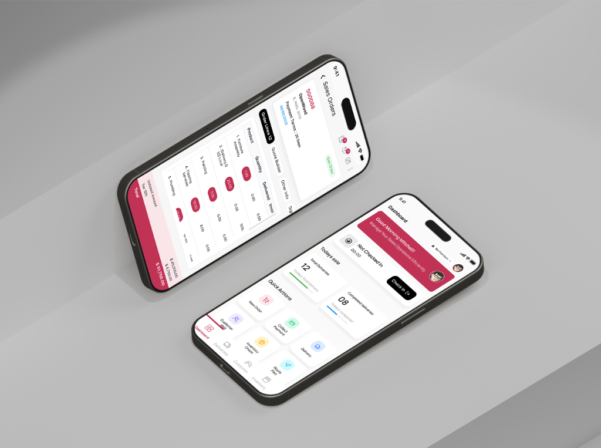
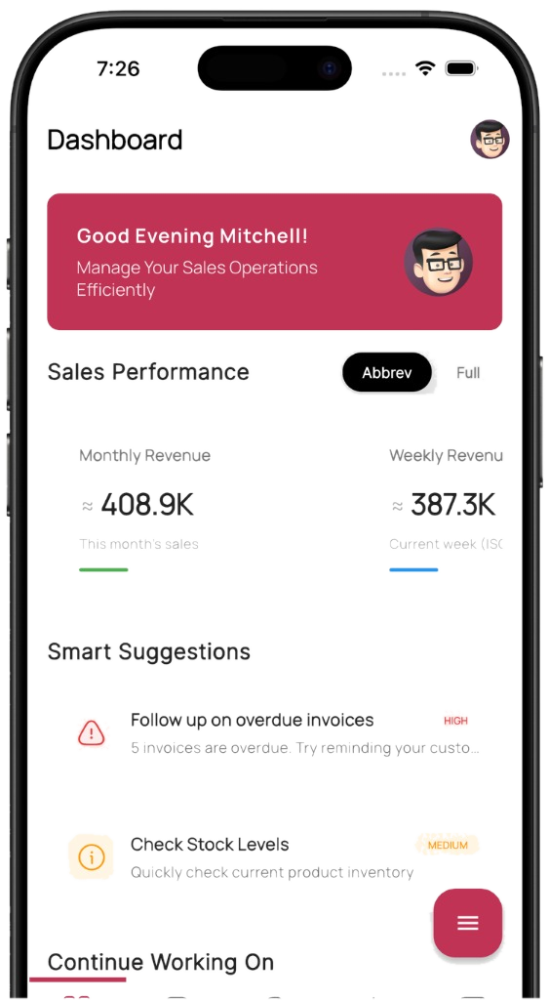
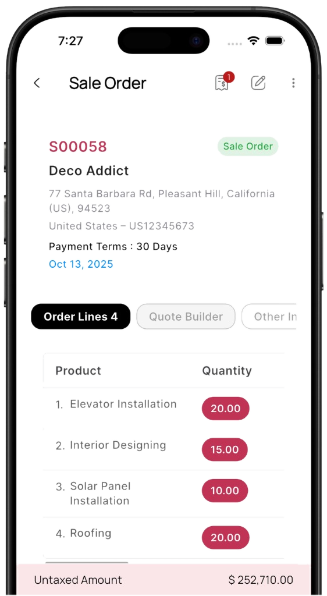

Mobo
Translating information-heavy enterprise operations into focused, high-clarity handheld experiences across an expanding suite of Odoo applications.

Background
Simplifying dense enterprise workflows
Mobo is a family of mobile applications built for Odoo ERP users, bringing complex business workflows into focused handheld tools. The core challenge was not simply shrinking desktop layouts, but fundamentally rethinking how information-heavy operations translate onto compact mobile screens.
Establishing a scalable handheld architecture
Through extensive user workflow mapping and rapid prototyping with Flutter engineers, we replaced sprawling multi-column tables with progressive disclosure cards and gesture-friendly bottom sheets, enabling field personnel to scan pricing, check stock, and sign deliveries in seconds.


Work Highlight
Unified design system across core modules
We developed a cohesive brand system with Pantone’s Viva Magenta as the unifying accent, standardizing tokens, typography, hit targets, and interaction states across Sales, CRM, Delivery, Inventory, and Attendance.
The new mobile ecosystem was successfully launched across iOS and Android, dramatically reducing data input errors and empowering enterprise teams to execute critical business decisions on the move.
Faced Challenges
Navigating enterprise density on handheld viewports
Translating desktop-native ERP systems into mobile apps required resolving tough trade-offs between information completeness, physical ergonomics, and network reliability.
Desktop Table Clutter vs. Mobile Screens
Desktop Odoo tables pack dozens of data columns. Blindly cutting fields broke operational utility for sales reps. We engineered progressive disclosure cards that keep essential totals visible while nesting line-item details in instant bottom drawers.
Single-Thumb Reach in Fast-Paced Operations
Field reps, cashier clerks, and delivery staff operate handheld devices with one hand on the move. We anchored primary actions, quick search filters, and barcode triggers to the bottom third of the interface to eliminate reach strain.
Maintaining Consistency Across Diverse Modules
Sales, Inventory, Attendance, and Delivery operate under vastly different velocities. We built a shared token and component system in Figma and Flutter that delivers brand coherence while adapting to module-specific interaction models.
Designing for Offline Caching & Sync Latency
Warehouse basements and delivery routes frequently drop cellular service. We worked closely with Flutter developers to design clear offline queue indicators, visual sync badges, and local device state caching.